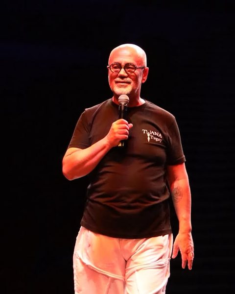
Tuana Adımları
Kelime anlamı “cennetten düşen ilk yağmur damlası” olsa da Tuana bizim için çok daha fazlası: dostluk, kardeşlik ve beraberlik; doğusuyla batısıyla yedi bölge, yedi kültür. Ekmeğimizi, suyumuzu, sevincimizi ve hüznümüzü paylaştığımız kocaman bir aile.
-
Anadolu'nun Adımları
Halk Oyunu
Binlerce yıllık Anadolu kültürünün sevincini, hüznünü ve hikâyesini taşıyan halk oyunlarımız, geçmişten aldığımız mirası geleceğin kuşaklarına aktaran bir köprüdür.
- Çocuk Halk Oyunları
- Gençlik Halk Oyunları Gösteri Topluluğu
- Hobi Halk Oyunları
Gala
Yıl sonu ve yıl başı gösterileri
Festivaller ve Açılışlar
Yurt içi ve yurt dışında Türkiye temsili
-
Sahnenin Çağdaş Adımları
Modern Dans
Klasik balenin disiplininden doğup 20. yüzyılda özgürleşen bu dallar, bedenin diliyle duyguyu ve insanın iç dünyasını anlatır.
- Çocuk Bale
- Yetişkin Bale
- Salon Dansları
-
Tutkunun Adımları
Flamenko
İspanya'nın Endülüs bölgesinde Roman, Arap ve Yahudi kültürlerinin buluşmasından doğan flamenko; aşkı, acıyı ve özgürlük tutkusunu topuk vuruşları ve el çırpışlarıyla anlatır.
-
Ege'nin Kardeş Adımları
Sirtaki
Eski Yunan halk danslarından beslenerek bir film için yaratılan sirtaki, omuz omuza dizilen dansçılarla dostluğu, birliği ve hayata coşkuyla bağlanmayı temsil eder.
-
Zarafetin Adımları
Oryantal
Kökleri Orta Doğu ve Anadolu'nun kadim kutlama danslarına uzanan oryantal, gövdenin akıcı hareketleriyle bereketi ve yaşam sevincini simgeler.
Hakkımızda
2002'den beri Türk halk danslarını sahnede yaşatıyoruz.
Tuana Sanat Gençlik ve Spor Kulübü Derneği, Türk tarihinin derinliklerine kök salmış folklorik öğelerimizi gün ışığına çıkarmak, yaymak ve yaşatmak amacıyla 2002 yılında Ankara'da kurulmuştur.
Türk kültürüne hizmet etmeyi amaç edinmiş olan Tuana Sanat Kulübü, kurulduğu günden bugüne kadar özel televizyon kanalları ve TRT ekranlarında birçok yapımda yer almıştır. 2006–2007 yıllarında TRT 1'de yayınlanan “Üçü Bir Yerde” adlı Türk halk müziği programının, 2008–2009 yıllarında yine TRT 1'de yayınlanan “Turnalar” adlı Türk halk müziği programının sürekli halk oyunları ekibi olarak her hafta canlı yayında Türk halkıyla buluşmuştur.
Tuana Sanat Kulübü, gerek Türkiye genelinde gerekse yurt dışında pek çok gösteri, festival, yarışma, turizm fuarı ve ticaret fuarı ile olimpiyat açılışları olmak üzere birçok organizasyona katılmıştır.
Kulüp bünyesinde Anamur, Artvin, Balkan, Bodrum, Burdur, Bursa Keles, Çiftetelli, Denizli Acıpayam, Denizli Ağır Zeybek, Erzurum, Gaziantep, Hakkari, İzmir, Kahramanmaraş, Kütahya, Milas, Muş, Roman, Samsun, Siirt, Silifke, Silivri, Tokat ve Trabzon başta olmak üzere Anadolu'da icra edilen Türk halk danslarından geniş bir repertuvar çalışması yapılmaktadır.
2002 yılından bugüne oluşturulan repertuvar, müzik kayıtları ve kostümleriyle ciddi bir donanıma sahip olan Tuana Sanat Gençlik ve Spor Kulübü Derneği; Çocuk Halk Oyunları, Gençlik Halk Oyunları Gösteri Topluluğu, Hobi Halk Oyunları, Salon Dansları, Çocuk Bale ve Yetişkin Bale, Flamenko, Sirtaki ve Oryantal çalışmalarını Armada AVM'de bulunan dans stüdyosunda sürdürmektedir.
67Organizasyonlar ve Festivaller
Organizasyonlar ve Festivaller
2004
- Halk Dansları Festivalleri, İspanya
2005
- Karaçi Sheraton Otel Türk Haftası, Pakistan
- Andong Mask Dance Festival, Güney Kore
- JCI Dünya Kongresi, Viyana, Avusturya
2006
- Halk Dansları Festivali, Estonya
- Mondial des Cultures de Drummondville Halk Dansları Festivali, Kanada
2007
- Turizm Fuarı, Belarus
- Halk Dansları Festivali, Belçika
- Chicago Türk Festivali, ABD
- Halk Dansları Festivali, Rodos, Yunanistan
- Hazine ve Dış Ticaret Müsteşarlığı organizasyonu, Çin
2008
- Turizm Fuarı, İsviçre
- Turizm Fuarı, Ukrayna
- Chicago Türk Festivali, ABD
- Turizm Fuarı, Orlando ve New York, ABD
- Halk Dansları Festivali, Romanya
- Halk Dansları Festivali, Rodos
- Turizm Fuarı, Finlandiya
- Turizm Fuarı, Yunanistan
2009
- Turizm Fuarı, İsviçre
- Turizm Fuarı, Ukrayna
- İstanbul Ticaret Odası ile Ticaret Fuarı, Birleşik Arap Emirlikleri
- İstanbul Ticaret Odası ile Ticaret Fuarı, Arnavutluk
- İstanbul Ticaret Odası ile Ticaret Fuarı, Bosna
- Chicago Türk Festivali, ABD
- Turizm Fuarı, Almanya
- Türk Günü Etkinliği, Katar
2010
- Turizm Fuarı, Almanya
- Chicago Türk Festivali, ABD
- Halk Dansları Festivali, Fransa
- İstanbul Ticaret Odası ile Ticaret Fuarı, Suriye
- İstanbul Ticaret Odası ile Ticaret Fuarı, Bosna
2011
- Turizm Fuarı, İspanya
- Turizm Fuarı, Rusya
- İstanbul Ticaret Odası ile Ticaret Fuarı, Cezayir
- İstanbul Ticaret Odası ile Ticaret Fuarı, Hindistan
- Halk Dansları Festivali, Fransa
- İstanbul Ticaret Odası ile Ticaret Fuarı, Arnavutluk
- Chicago Türk Festivali, ABD
2012
- İstanbul Ticaret Odası ile Ticaret Fuarı, Malezya
- İstanbul Ticaret Odası ile Ticaret Fuarı, Nijerya
- İstanbul Ticaret Odası ile Ticaret Fuarı, Bosna
- İstanbul Ticaret Odası ile Ticaret Fuarı, Meksika
- Halk Dansları Festivali, Bulgaristan
- Chicago Türk Festivali, ABD
2013
- Nevruz Kutlamaları, İngiltere
- İstanbul Ticaret Odası ile Ticaret Fuarı, Çin
- Chicago Türk Festivali, ABD
- İstanbul Ticaret Odası ile Ticaret Fuarı, Slovenya
2014
- İstanbul Ticaret Odası ile Ticaret Fuarı, Vietnam
- İstanbul Ticaret Odası ile Ticaret Fuarı, Kamerun
- Halk Dansları Yarışması, Güney Kore
2015
- İstanbul Ticaret Odası ile Ticaret Fuarı, Bosna
2016
- Cumhurbaşkanlığı görevlendirmesi ile Şili
- Agrigento Halk Dansları Yarışması, Sicilya
2017
- Houston Türk Festivali ve San Antonio Cumhuriyet Balosu, ABD
- Dallas ve Denver Cumhuriyet Balosu, ABD
2018
- Houston Türk Festivali, ABD
- Denver Cumhuriyet Balosu, ABD
2019
- Folk Dance Festival, İtalya
2022
- Washington Türk Festivali, San Antonio Cumhuriyet Balosu, Dallas Cumhuriyet Balosu, ABD
2023
- Houston Türk Festivali, ABD
- Chicago Cumhuriyet Balosu, ABD
2025
- International Dance Festival “Folk Harbor”, Gorzów (3. Ödül)
2026
- International Folklore Dance Festival of Agrinio
- International Folk Art Festival (Gold Ring), Moskova – Vladimir – Suzdal
- Rabat Türk Büyükelçiliği 29 Ekim Resepsiyonu
8Yarışmalar
Türkiye Halk Dansları Yarışmaları
T.C. Kültür ve Turizm Bakanlığı ile Hacı Ömer Sabancı Vakfı'nın birlikte organize ettiği Türkiye Halk Dansları Yarışmalarında
2004
- Türkiye Birincisi
2005
- Türkiye İkincisi
2006
- Türkiye Birincisi
2007
- Türkiye Birincisi
2008
- Konuk Topluluk
2009
- Türkiye Üçüncüsü
2010
- Türkiye Dördüncüsü
2011
- Türkiye İkincisi
7Özel Temsiller
Özel Temsiller
2009
- 5. Dünya Su Forumu Açılış Töreni, İstanbul
2011
- 25. Dünya Üniversitelerarası Kış Olimpiyatları Açılış Törenleri, Erzurum
- Modern Pentatlon Yıldızlar Dünya Şampiyonası Açılış Törenleri, İstanbul
- 1. Dünya Çocuk Oyunları Açılış Törenleri, Ankara
2016
- 1000 Yılın Sesi Türkçe Bayramı, İstanbul
2017
- 23. İşitme Engelliler Olimpiyat Oyunları Açılış ve Kapanış Gösterileri
- Türkçe Yaz Okulu Kapanış Töreni, Ankara
3Uluslararası Yarışmalar
Uluslararası Yarışmalar
2014
- Güney Kore Halk Dansları Yarışması, Birincilik Ödülü
2016
- Sicilya Halk Dansları Yarışması, Birincilik Ödülü
2025
- Polonya Halk Dansları Yarışması, Üçüncülük Ödülü
55Ülke
Kibele
Sıradaki gösteri
- Tarih
- 5 Aralık 2026, Cumartesi
- Saat
- 19:00
- Salon
- MEB Şura Salonu
- Şehir
- Ankara
--Gün
--Saat
--Dakika
Eğitmen Kadromuz
Anadolu'nun Adımları
Halk Oyunları
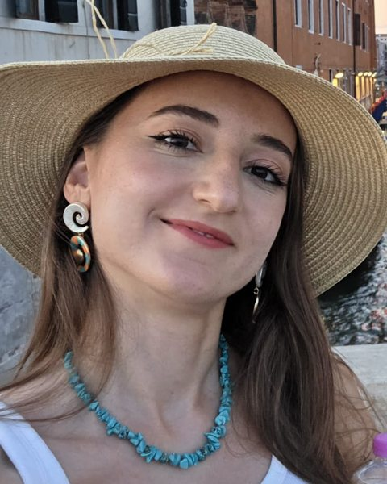
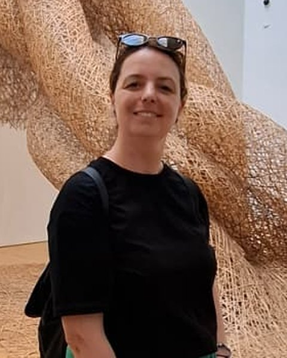
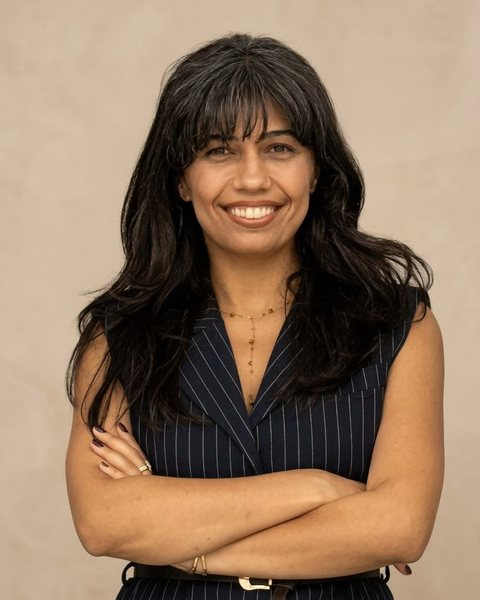
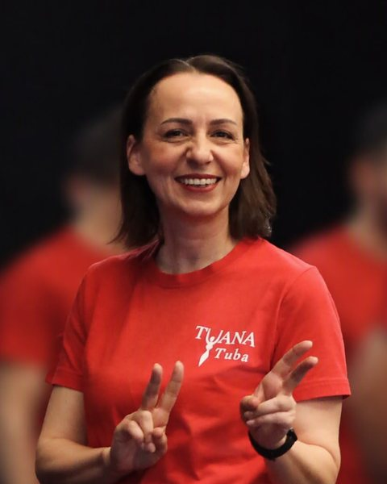
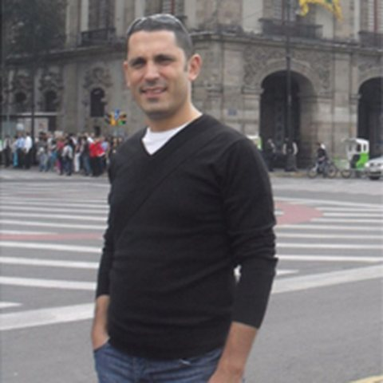
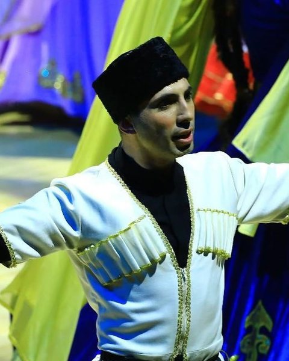
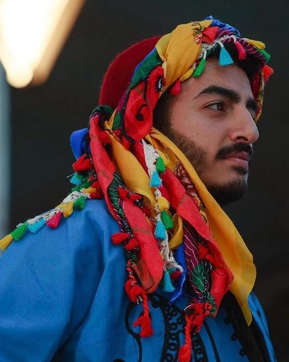
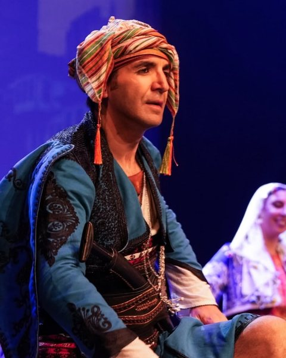
Sahnenin Çağdaş Adımları
Modern Dans
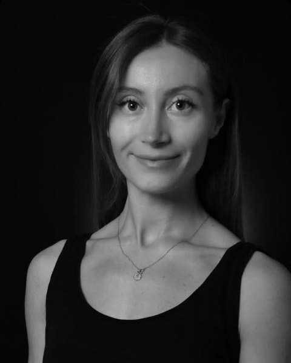
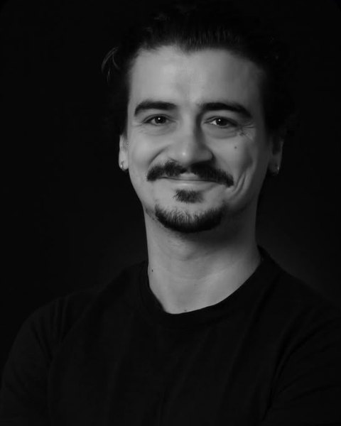
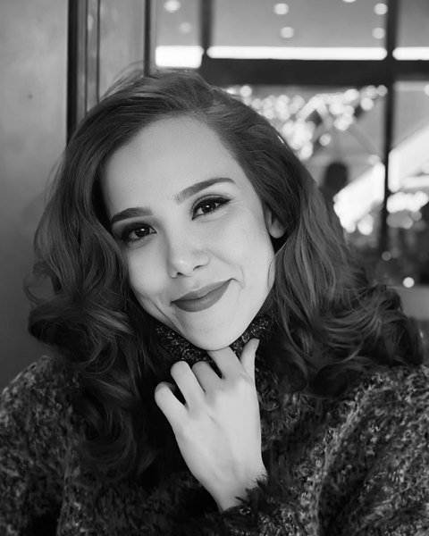
Tutkunun Adımları
Flamenko
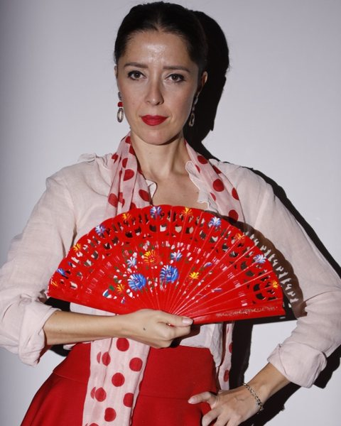
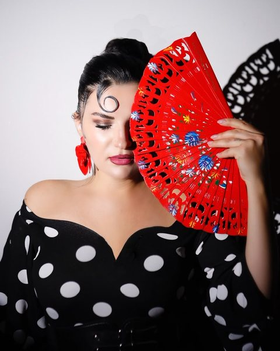
Ege'nin Kardeş Adımları
Sirtaki
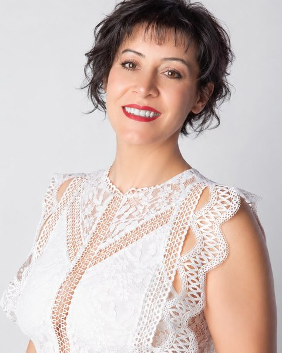
Zarafetin Adımları
Oryantal
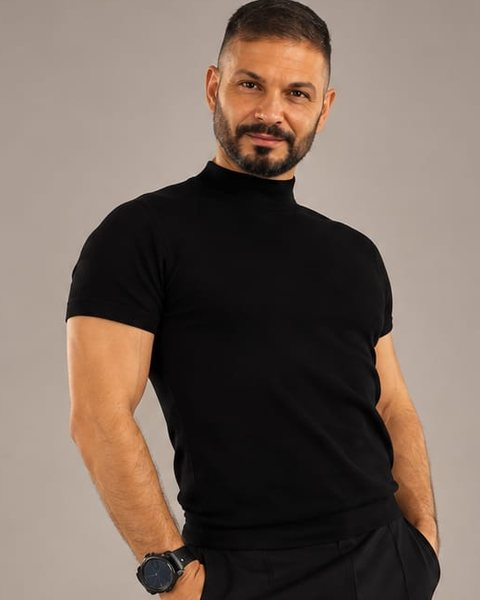
Galeri
Basında Tuana
Öne çıkan
Tuana Sanat Kulübü
Tuana Sanat Kulübü tanıtım filmi.
Burdur Yöresi
Trabzon Yöresi
Gaziantep Yöresi
Milas Yöresi
Antep Yöresi
Trabzon Yöresi
Trabzon Yöresi
Hakkari Yöresi
İzmir Yöresi
Burdur Yöresi
Muş Yöresi
THOF 2018 Bölge Yarışması · Hakkari
Kütahya Geleneksel
THOF 2023 Final Yarışması · Trabzon
Sahnede bize katıl
Geçmişin izinde yeni adımlara
Anadolu'nun Adımları
Halk Oyunu
- Çocuk Halk Oyunları
- Gençlik Halk Oyunları Gösteri Topluluğu
- Hobi Halk Oyunları
Sahnenin Çağdaş Adımları
Modern Dans
- Çocuk Bale
- Yetişkin Bale
- Salon Dansları
Tutkunun Adımları
Kayıt formu
Flamenko
Ege'nin Kardeş Adımları
Kayıt formu
Sirtaki
Zarafetin Adımları
Kayıt formu